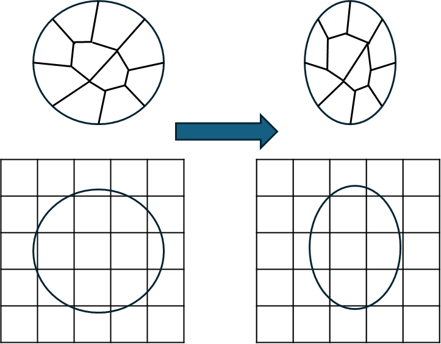

Lagrangian vs. Eulerian Descriptions#
When analyzing the motion and deformation of materials, two fundamental descriptions are used: Lagrangian and Eulerian. These descriptions provide different perspectives on how we track and analyze the movement of particles or material points in space and time. Understanding these frameworks is essential for formulating numerical methods like the Material Point Method (MPM), particularly for simulating granular materials, where both solid and fluid-like behaviors are present.

The image contrasts two key approaches: The Lagrangian method (shown above) where the mesh moves and deforms with the material, maintaining one-to-one correspondence between grid points and material points. This approach excels at tracking material history and boundaries but suffers from potential mesh distortion. Below, the Eulerian method uses a stationary grid through which material flows freely, eliminating mesh distortion concerns but making material tracking more challenging
Lagrangian Description (Material Frame)#
The Lagrangian description follows individual material points as they move through space and time. It is sometimes referred to as the material description because it focuses on the motion and deformation of specific particles.
Each material point is labeled by its initial position \( \mathbf{X} \) at time \( t=0 \).
The position of the particle at any later time \( t \) is given by a function:
\[ \mathbf{x} = \mathbf{\phi}(\mathbf{X}, t) \]where \( \mathbf{x} \) is the current spatial position.
In this framework, quantities such as velocity \( \mathbf{v} \), acceleration \( \mathbf{a} \), and stress \( \boldsymbol{\sigma} \) are expressed in terms of the material coordinates.
Advantages:#
Ideal for solid mechanics, where tracking deformation and history-dependent material behavior (e.g., plasticity, fracture) is critical.
Naturally incorporates boundary conditions (fixed supports, loads applied at specific points).
Used in classical finite element methods (FEM), where the mesh follows the material.
Disadvantages:#
Computationally expensive for large deformations, as elements can distort significantly.
Not well-suited for problems with extreme material flow (e.g., granular flows, landslides).
Eulerian Description (Spatial Frame)#
The Eulerian description observes the material as it moves through fixed points in space, akin to watching a river flow past a stationary observer.
Instead of following individual material points, we define field variables (velocity, stress, density, etc.) at fixed spatial locations.
The motion of the material is described using a velocity field:
\[ \mathbf{v} = \mathbf{v}(\mathbf{x}, t) \]where \( \mathbf{x} \) is the spatial position.
Conservation laws (mass, momentum, energy) are written in differential form using partial derivatives in space and time.
Advantages:#
Well-suited for fluid mechanics and high-deformation problems (e.g., air and water flow, shock waves, explosions).
No need to track individual material points, avoiding mesh distortions.
Used in computational fluid dynamics (CFD) and some mesh-free methods.
Disadvantages:#
Difficult to track individual particles and material history (important for plasticity, damage, and memory-dependent behavior).
Complex boundary conditions for problems involving interfaces and free surfaces.
Hybrid Approaches & the Material Point Method (MPM)#
To address the limitations of purely Lagrangian or Eulerian approaches, hybrid methods have been developed. The Material Point Method (MPM) is one such approach, particularly useful for simulating granular materials, which exhibit both solid- and fluid-like behaviors.
MPM uses Lagrangian particles (material points) to carry mass, velocity, and state variables.
MPM uses an Eulerian background grid for computing gradients and solving governing equations.
The material points move through the grid, transferring information between Lagrangian and Eulerian representations.
This dual representation enables MPM to handle large deformations, making it highly effective for problems like landslides, and debris flows.